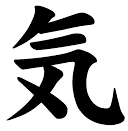
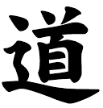
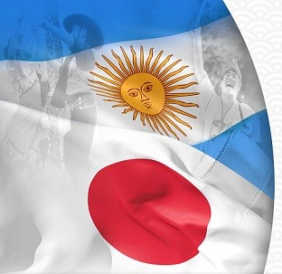
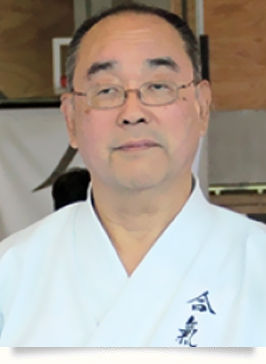
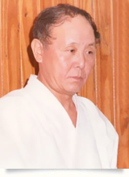
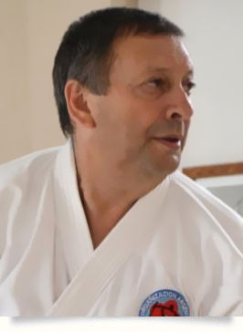

Que es el Aikido?
Significado
El Aikido es un arte marcial de origen japonés. Fundado por el Maestro Morihei Ueshiba O'Sensei Morihei Ueshiba - Creador del Aikido (1883-1969) hereda tanto la tradición marcial de las artes de las que desciende, coma una profunda espiritualidad y filosofía. Pero, ¿qué es lo diferencia al Aikido de las demás artes marciales? El espíritu de las artes marciales no se encuentra en una atmósfera competitiva y combativa, donde la fuerza bruta predomina y el objetivo supremo es la victoria a cualquier precio. El Maestro Ueshiba concluyó que el verdadero fin de un arte se basa en la búsqueda de la perfección como ser humano, física y mentalmente a través del entrenamiento constante y la practica continua. El Aikido se niega a convertirse en un deporte y rechaza todo tipo de certámenes o concursos que incluyan divisiones por peso o clasificaciones basadas en el número de victorias así como también la recompensa a los campeones. Entendemos que éstas actitudes sólo alimentan el egoísmo, la egolatría y la falta de consideración por el prójimo. El Aikido es un camino abierto a toda la gente que aspira a ser uno con la naturaleza.
AI se interpreta como armonía o unión.
KI es la energía universal o espíritu.
DO es camino o vía.
Las puertas del Aikido están abiertas personas de todas las edades, sexo, nacionalidades, credos y razas. Es importante destacar que no es una religión. El entrenamiento de la mente y el cuerpo está basado en el amor y la armonía. El Aikido principalmente intenta cultivar la verdadera humanidad en un mundo pacífico. Las practicas se realizan en un marco de respeto, cordialidad y camaradería. Uno de los tantos principios legados por el fundador es el de practicar con vigor y con alegría. Actualmente el Aikido se practica en más de 90 países en el mundo y enseñándose en facultades, colegios primario, secundarios y colegios de enseñanzas especiales. En el año 1991 fue declarado por la Organización de las Naciones Unidas (ONU) El Arte de la Paz El Aikido y la Salud A diferencia de otras artes marciales, el Aikido puede ser practicado por personas de todas las edades. Esto se debe a la circularidad que caracteriza sus movimientos, el cuidado constante del compañero y la relajación y fluidez de sus técnicas. Estos son algunos de los beneficios que se obtiene al practicar: Mejora la flexibilidad. Desarrolla los reflejos. Mejora el equilibrio y la coordinación. Mejora la circulación sanguínea. Estimula las articulaciones, previniendo artritis, artrosis y otros problemas articulares. Mejora la postura, fortaleciendo la columna. Previene el stress. Evita contracturas, relajando y elongando las articulaciones. Ayuda a la relajación del cuerpo y de la mente. Mejora problemas respiratorios. Trabaja en cuerpo, mente y espíritu, previniendo enfermedades como Alzermeir, arterioesclerosis, pánicos, fobias, etc.
Historia del Fundador
Nacido en Tanabe, provincia de Kii -Actual prefectura de Wakayama-, luego de dedicar su vida a la práctica de las artes marciales crea el Aikido o “El arte de la paz”. Practicó Tenjin Shin’yo-Ryu Jujutsu bajo la enseñanza de Tokusaburo Tozawa (Tokio 1901), Goto-Ha Yagyu Shingan-Ryu con el maestro Masakatsu Nakai (Ciudad de Sakai 1903 – 1908), Judo con el maestro Kiyoichi Takagi (Tanabe 1911) y Daito-Ryu Jujutsu con el maestro Sokaku Takeda (Hokkaido 1915). Conocido como O’sensei -Gran maestro- y Kaiso -Fundador-, Morihei Ueshiba fue fuertemente influenciado por la religión Omoto-Kyo, especialmente por los pensamientos del reverendo Onisaburo Deguchi , a quién en 1924 acompaña a Manchuria y Mongolia para fundar una colonia utópica. En su paso por China es tomado prisionero por los militares y finalmente liberado gracias a la influencia del gobierno japonés.

En 1931 establece el Dojo Kobukan en Shinjuku, Tokio, donde durante 11 años se dedica a la enseñanza de Daito-Ryu Aikijujutsu mientras gradualmente se distancia de Sokaku Takeda y comienza a llamar a su arte Aiki Budo. Al término de la Segunda Guerra Mundial Morihei Ueshiba abandona la enseñanza en Tokio y se retira a la región de Iwama, prefectura de Ibaraki para llevar una vida más austera de intenso entrenamiento, meditación y trabajo en el campo. En 1942 el nombre de Aikido se torna oficial y es reconocido por el Ministerio de Educación de Japón.

En 1960 Morihei Ueshiba recibe la condecoración Shiju Hosho (Medalla de Honor de la Cinta Púrpura) del gobierno de Japón. Morihei Ueshiba vivió sus últimos años en Tokio donde su salud decayó gradualmente, a pesar de lo cual continuó dictando clases hasta que, en Febrero de 1969, enferma y es internado en el Hospital de Keio del cual es finalmente dado de alta y se retira a su hogar, donde fallece el 26 de abril de cáncer de hígado. Durante más de 50 años de su vida Morihei Ueshiba dictó clases a cientos de estudiantes. Se caracterizó por una visión ética, humanista y compasiva en su enfoque de las artes marciales y nutrió al Aikido con una profunda filosofía en la que prevalece la no violencia y la desestimación de la búsqueda de la victoria sobre un adversario.
Aikido en la Argentina
Maestros del aikido
Makoto Nishida
Makoto Nishida nació en la provincia de Iwate, al norte de Japón, donde vivió hasta los 18 años. Allí estudió Kendo durante 5 años y luego -durante sus años de colegio- estudió Kyudo por 3 años hasta alcanzar la graduación de 2do Dan. Estudió Ingeniería en la ciudad de Tokio y en el año 1968 viajó a Brasil como inmigrante tecnico. Durante su residencia en San Pablo conoce el Aikido a través del maestro Reishin Kawai y comienza a practicarlo en 1970, fue discípulo de su maestro durante 15 años hasta convertirse en el Director Técnico de la FEPAI -Federación Paulista de Aikido-, fundada en 1977. Desde 1980 dicta clases de Aikido. Más de 100 cinturones negros han egresado de su academia, muchos de los cuales tienen hoy día sus propias escuelas y difunden el Aikido por todo Brasil. En 1990 la Fundación Aikikai le otorgó a la FEPAI la representación directa de Aikido a través de Nishida Sensei. Ha viajado constantemente a Japón y entrenado con numerosos maestros como Kisshomaru Ueshiba y Moriteru Ueshiba en la sede central de Aikikai -Hombu Dojo-, Yasuo Kobayashi en Tokio y con el maestro Shigeru Kawabe en Akita.
Kenzo Miyazawa
El maestro Kenzo Miyazawa nació en 1937 en Chiba -Japón- en el seno de una familia tradicional con fuerte influencia marcial. A los 11 años inicia la práctica del Kenpo para posteriormente estudiar Judo y Esgrima Japonesa en la escuela Katori Shinto Ryu. Comienza la práctica del Aikido bajo la enseñanza de Morihei Ueshiba cuando ingresa a la universidad en Tokyo. Se licenció en Ciencias Económicas y en 1964 viajó a la Argentina, donde se radicó de forma definitiva. Inmediatamente comenzó con la enseñanza del Aikido, introduciendolo de esta manera en nuestro país. Al principio solo enseñaba Aikido como método de defensa personal en el dojo de Yamamoto Sensei, pero en 1965 inicia la enseñanza en el Instituto Kumazawa y en 1968 comienza a enseñar Taidokai Kenpo, estilo del que fue el creador. Simultáneamente estudiaba Karate Do Shotokan con Itaya Sensei para graduarse como 2do dan. Durante varios años dio clases en distintos institutos hasta que en 1981 inauguró su propio dojo en la zona de Olivos para la enseñanza de Kenpo y Aikido. En 1992 funda la Asociación Argentina de Taidokai Kenpo. Miyazawa sensei obtuvo la graduación de 7mo Dan Shihan de Aikido. Fue vicepresidente de la International Aikido Federation (IAF), Presidente honorario y asesor técnico de la Asociación Argentina de Aikido, Vicepresidente de la Federación Latinoamericana de Aikido y representante del Comité Ejecutivo de la Federación Mercosur de Aikido. Además de dar clases en Argentina dictaba también seminarios internacionales en países como Chile, Brasil, Panamá, Gran Bretaña, Polonia, Escocia, Holanda e Israel. Fallece en su hogar luego de una grave enfermedad el 5 de octubre de 2003. Emprendiendo su espíritu guerrero de esta manera un nuevo camino. En Argentina, cada vez que pisemos un tatami, su presencia será sentida con fuerza y será honrada con nuestros corazones completos.
Roberto Palma
Nacido el 9 de Agosto de 1958, en La Consulta, distrito de San Carlos, provincia de Mendoza. En el año 2003 sufrió una gran pérdida al fallecer su maestro Kenzo Miyazawa Shihan, con quien tenía una estrecha relación y vínculo. Fue a partir de entonces que decidió continuar con el legado de su maestro sembrando y difundiendo el arte del AIKIDO en toda la Republica Argentina. Promueve la incorporación del Aikido como materia extracurricular en colegios primarios, secundarios y de enseñanza especial. Dicta clases en el dojo central de la OAA (Aikido Palma Dojo) y en los dojos afiliados del conurbano y del interior del país, y también imparte seminarios tanto de carácter Nacional como de carácter Internacional. Es además el encargado de tomar exámenes de grado en todos los dojos de la OAA a lo largo y ancho de todo nuestro país. Frecuentemente invitado desde otros países con el mismo fin de dictar seminarios y viaja constantemente al exterior para expandir y colaborar con la difusión del legado del creador del Aikido y además con el firme propósito de la difusión de los valores morales que la práctica de este arte implica. Practicó en el Hombu Dojo, sede central del Aikido en el mundo (Tokio, Japón) bajo la dirección de Doshu (cabeza) Moriteru Ueshiba. Fue uchi deshi (alumno interno) en el dojo de Ibaraki Shibu Dojo (Iwama, Japón) bajo la dirección de Hiroshi Isoyama Shihan 8º Dan y Shigemi Inagaki Shihan 7º Dan, exponentes de primera línea del AIKIDO internacional además de alumnos directos del creador Morihei Ueshiba. Durante el transcurso de la creación de la OAA hasta la fecha Sensei Palma es el creador y organizador del Aikido Koshukai, que se realiza en Argentina desde el año 2004 de forma ininterrumpida. El Koshukai es un encuentro nacional e internacional de Aikido, que reúne a las escuelas de Aikido del país y del exterior, con el único propósito de confraternizar y difundir ésta disciplina y además difundir las reglas morales y filosóficas del arte marcial. En los años 2005 tuvo el reconocimiento al Mérito y a la Trayectoria, por el trabajo y difusión del Aikido le fue otorgado el premio al Artista Marcial. A la fecha, trabaja incansablemente para difundir, transmitir y ejercitar el AIKIDO desde su génesis más profunda , ya que esta disciplina no acaba en el tatami de práctica , sino que se amplia y crece a partir de la difusión de las reglas morales , éticas y filosóficas que rigen al mismo . Siendo quizá esto lo que más fortaleza implique en la difusión del Aikido.